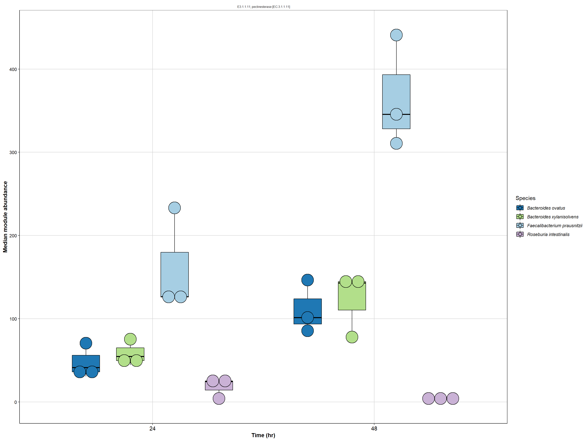

Assembly diet based minimal microbiome (Db-MM10)
Species function relationships via gut metabolic modules
Sudarshan A. Shetty
Sun Jul 18 12:20:21 2021
Last updated: 2021-07-18
Checks: 7 0
Knit directory: DbMM/
This reproducible R Markdown analysis was created with workflowr (version 1.6.2). The Checks tab describes the reproducibility checks that were applied when the results were created. The Past versions tab lists the development history.
Great! Since the R Markdown file has been committed to the Git repository, you know the exact version of the code that produced these results.
Great job! The global environment was empty. Objects defined in the global environment can affect the analysis in your R Markdown file in unknown ways. For reproduciblity it’s best to always run the code in an empty environment.
The command set.seed(20210404) was run prior to running the code in the R Markdown file. Setting a seed ensures that any results that rely on randomness, e.g. subsampling or permutations, are reproducible.
Great job! Recording the operating system, R version, and package versions is critical for reproducibility.
Nice! There were no cached chunks for this analysis, so you can be confident that you successfully produced the results during this run.
Great job! Using relative paths to the files within your workflowr project makes it easier to run your code on other machines.
Great! You are using Git for version control. Tracking code development and connecting the code version to the results is critical for reproducibility.
Note that you need to be careful to ensure that all relevant files for the analysis have been committed to Git prior to generating the results (you can use wflow_publish or wflow_git_commit). workflowr only checks the R Markdown file, but you know if there are other scripts or data files that it depends on. Below is the status of the Git repository when the results were generated:
Ignored files:
Ignored: .Rhistory
Ignored: .Rproj.user/
Untracked files:
Untracked: .Rprofile
Untracked: .gitattributes
Untracked: .gitignore
Untracked: DbMM.Rproj
Untracked: Ocucpancy_relationship.csv
Untracked: README.md
Untracked: _workflowr.yml
Untracked: analysis/
Untracked: bin/
Untracked: code/
Untracked: data/
Untracked: data_raw/
Untracked: ko00010.Glycolysis.png
Untracked: ko00010.png
Untracked: ko00010.xml
Untracked: ko00640.png
Untracked: ko00640.propanoate_metabolism.png
Untracked: ko00640.xml
Untracked: ko00650.butanoate_metabolism.png
Untracked: ko00650.png
Untracked: ko00650.xml
Untracked: output/
Untracked: structure.Rmd
Note that any generated files, e.g. HTML, png, CSS, etc., are not included in this status report because it is ok for generated content to have uncommitted changes.
There are no past versions. Publish this analysis with wflow_publish() to start tracking its development.
Introduction
For disentangling the strain-level active metabolic process, transcriptomic profiles were analysed using the gut metabolic modules (GMMs) framework. The GMMs reported previously were curated to include modules based on physiological information of the 10 Db-MM strains (see methods for curation steps)
Setup
suppressPackageStartupMessages({
library(tidyverse)
library(data.table)
library(circlize)
#library(omixerRpm)
library(ggpubr)
library(RColorBrewer)
library(edgeR)
library(reshape2)
library(patchwork)
})library(omixerRpm)GMM prep
Convert the KEGG annotation and counts file in input format required by omixerRpm R package from Raes lab.
#dir.create("gmm_input")
complete_table_brite <- readRDS("data/04_metatrans/rds/complete_table_brite_filter.rds")
#head(tpm_table_brite)
#DT::datatable(complete_table_brite)
#DT::datatable(complete_table_brite_sum)
complete_table_brite_sum <- complete_table_brite %>% group_by(KO, BacterialStrain) %>%
summarize(sum(B1T24), sum(B2T24), sum(B3T24),sum(B1T48), sum(B2T48), sum(B3T48))`summarise()` has grouped output by 'KO'. You can override using the `.groups` argument.#head(complete_table_brite)
table_brite <- complete_table_brite_sum[,c(3:8)]
#head(table_brite)
rownames(table_brite) <- table_brite$KOWarning: Unknown or uninitialised column: `KO`.cpm_table_brite_count <- as.data.frame(cpm(table_brite, log = FALSE))
#head(cpm_table_brite_count)
cpm_table_brite_count$BacterialStrain <- complete_table_brite_sum$BacterialStrain
cpm_table_brite_count$KO <- complete_table_brite_sum$KO
#head(cpm_table_brite_count)
colnames(cpm_table_brite_count) <- c(
"B1T24",
"B2T24",
"B3T24",
"B1T48",
"B2T48",
"B3T48",
"BacterialStrain",
"KO")
brite_gmm <-
as.data.frame(cpm_table_brite_count[, c("KO",
"BacterialStrain",
"B1T24",
"B2T24",
"B3T24",
"B1T48",
"B2T48",
"B3T48")])
#head(brite_gmm)
colnames(brite_gmm) <-
c("KO",
"species",
"B1T24",
"B2T24",
"B3T24",
"B1T48",
"B2T48",
"B3T48")
head(brite_gmm) KO species B1T24 B2T24 B3T24
1 K00003 Agathobacter_rectalis 148.292379 134.891967 127.812570
2 K00003 Anaerobutyricum_soehngenii 22.430780 32.620933 3.264689
3 K00003 Coprococcus_catus 27.415398 25.567759 9.304363
4 K00003 Eubacterium_siraeum 265.430897 247.742764 58.111462
5 K00003 Faecalibacterium_prausnitzii 45.796176 41.216990 82.270160
6 K00003 Lachnospiraceae_bacterium 8.411543 3.967411 28.892497
B1T48 B2T48 B3T48
1 55.866943 128.260599 127.33222
2 8.793871 20.734546 37.48565
3 10.690588 6.972679 49.98087
4 78.455120 81.103269 70.65748
5 138.287926 160.922096 101.74677
6 33.623623 47.340822 41.50197brite_gmm <-separate(brite_gmm, species, c("Bacteria", "Locus"),
extra = "merge", fill = "right")
#head(brite_gmm)
brite_gmm <-separate(brite_gmm, Locus, c("Species", "Locus"),
extra = "merge", fill = "right")
brite_gmm <- brite_gmm %>% unite(Species, Bacteria,Species)
brite_gmm <- brite_gmm[,-3]
head(brite_gmm) KO Species B1T24 B2T24 B3T24
1 K00003 Agathobacter_rectalis 148.292379 134.891967 127.812570
2 K00003 Anaerobutyricum_soehngenii 22.430780 32.620933 3.264689
3 K00003 Coprococcus_catus 27.415398 25.567759 9.304363
4 K00003 Eubacterium_siraeum 265.430897 247.742764 58.111462
5 K00003 Faecalibacterium_prausnitzii 45.796176 41.216990 82.270160
6 K00003 Lachnospiraceae_bacterium 8.411543 3.967411 28.892497
B1T48 B2T48 B3T48
1 55.866943 128.260599 127.33222
2 8.793871 20.734546 37.48565
3 10.690588 6.972679 49.98087
4 78.455120 81.103269 70.65748
5 138.287926 160.922096 101.74677
6 33.623623 47.340822 41.50197write.table(brite_gmm, file='data_raw/05_gmm/brite_gmm_server_filtered.tsv',
quote=FALSE,
sep='\t', col.names = NA)Upload this file to micro3 server.
Server GMM calculations
############
#dat <- read.table("03_gmm_anlaysis/data/brite_gmm_server.tsv", header=T, sep="\t")
dat <- read.table("data_raw/05_gmm/brite_gmm_server_filtered.tsv", header=T, sep="\t")
#meta <- read.table("gmm/metadata.tsv", header=T, sep="\t")
db <- loadDB("GMMs.v1.07")
dat.sub <- dat[,-1]
dat.sub <- dat.sub[,c("Species","KO","B1T24", "B2T24","B3T24", "B1T48", "B2T48","B3T48")]
mods <- rpm(dat.sub, minimum.coverage=0.5, annotation = 2, module.db = db)
saveRDS(mods, "data_raw/05_gmm/mods_gmm_aa.rds")
###########Read GMMs
# the GMM cal was done on server due to issues with java windows pc. the mods_gmm_aa.rds file was copied to gmm
# read file from server
#mods <- readRDS("03_gmm_anlaysis/data/mods_gmm.rds")
mods <- readRDS("data_raw/05_gmm/mods_gmm_aa.rds")
modsDF <- cbind(mods@annotation, slot(mods, "abundance"))
write.table(modsDF, file='data/05_gmm/tables/modsDF_gmm_linux.tsv',
quote=FALSE, sep='\t', col.names = NA)
#head(modsDF)Links Species-Functions
#colnames(modsDF)
modsDF2 <- modsDF
modsDF2 <- unite(modsDF, TAXMOD, "Taxon","Module")
#head(modsDF2)
rownames(modsDF2) <- modsDF2$TAXMOD
modsDF2 <- modsDF2[,-1]
#colnames(modsDF2)
#DT::datatable(modsDF2)Check fold change
source("code/check_wilcox.r")
pval <- check_wilcoxon(modsDF2, c("48h","48h","24h","48h", "24h","24h"))
#head(pval)
summary(pval$p.value) Min. 1st Qu. Median Mean 3rd Qu. Max.
0.2203 0.2203 0.3568 0.5133 0.8381 1.0000 pval$Taxon <- modsDF$Taxon
pval$Module <- modsDF$Module
pval <- pval[,c("Module", "Taxon", "fold.change.log10", "p.value")]
mat <- pval
#DT::datatable(mat)
colnames(mat) <- c("from", "to", "Difference", "P-value")# Read names of modules
curatedGMM_names <- read.table("data_raw/05_gmm/ModulesCustom/CuratedGMM_names.txt", header=F, sep="\t")
#head(curatedGMM_names)
fil_list <- pval$Module
curatedGMM_names_filt <- filter(curatedGMM_names, curatedGMM_names$V1 %in% fil_list)
#dim(curatedGMM_names_filt)
#curatedGMM_names_filt$V1
colnames(curatedGMM_names_filt) <- c("Module", "Names", "Category")
#unique(mat$from)
#dim(pval)
mat_df <- merge(pval, curatedGMM_names_filt, by.x="Module")
#dim(mat_df)
#head(mat_df)
mat_df <- mat_df[,c("Taxon", "Names", "fold.change.log10", "p.value", "Module", "Category")]
#mat_df <- mat_df[,c("Taxon", "Module", "fold.change.log10", "p.value", "Names")]
colnames(mat_df) <- c("from", "to", "Difference", "P-value", "ModuleName", "Category")
#mat <- subset(mat_df, abs(Difference) > 0.5)Specify colors
#head(mat_df)
# Change name
mat_df$from <- gsub("Lachnospiraceae_bacterium", "Flavonifractor_plautii",mat_df$from)
head(mat_df) from to Difference P-value
1 Bacteroides_xylanisolvens arabinoxylan degradation -0.02637824 0.8381044
2 Eubacterium_siraeum arabinoxylan degradation -0.15206490 0.8381044
3 Agathobacter_rectalis arabinoxylan degradation 0.09333723 0.8381044
4 Subdoligranulum_variabile arabinoxylan degradation 0.14423437 0.8381044
5 Roseburia_intestinalis arabinoxylan degradation -0.11149263 0.6159204
6 Bacteroides_ovatus arabinoxylan degradation 0.38590780 0.2202847
ModuleName Category
1 MF0001 Other
2 MF0001 Other
3 MF0001 Other
4 MF0001 Other
5 MF0001 Other
6 MF0001 Othermat_df$from <- gsub("_"," ",mat_df$from)
# set colors
strain.colors <- c('Bacteroides ovatus' = "#1F78B4",
'Bacteroides xylanisolvens' = "#B2DF8A",
'Anaerobutyricum soehngenii' = "#FDBF6F",
'Agathobacter rectalis' = "#33A02C",
'Eubacterium siraeum' ="#FB9A99",
'Faecalibacterium prausnitzii' = "#A6CEE3",
'Flavonifractor plautii' = "#E31A1C",
'Roseburia intestinalis' = "#CAB2D6",
'Subdoligranulum variabile' = "#FF7F00",
'Coprococcus catus' = "#6A3D9A")Plot Chords
# Split the data to positive and negative change. Anything below 0 (negative values is higher in 24h while positive are higher in 48h samples)
mat.pos <- subset(mat_df, Difference > 0)
mat.neg <- subset(mat_df, Difference < 0)
mat.pos_other <- subset(mat.pos, Category== "Other")
mat.neg_other <- subset(mat.neg, Category== "Other")
#subset(mat_df, Category== "Other" & abs(Difference) >= 0.2) %>%
# ggplot(aes(Difference, to)) +
# geom_col() + facet_grid(~ from, scales = "free_y")
mat.pos_other <- mat.pos_other %>% select(-"P-value")
circos.par(start.degree = 180, gap.degree =3)
chordDiagram(mat.pos_other, annotationTrack = "grid", big.gap = 10,
transparency = 0.1, grid.col = strain.colors,
preAllocateTracks = list(track.height = max(strwidth(unlist(dimnames(mat.pos))))))
for(si in get.all.sector.index()) {
xlim = get.cell.meta.data("xlim", sector.index = si, track.index = 1)
ylim = get.cell.meta.data("ylim", sector.index = si, track.index = 1)
circos.text(mean(xlim), mean(ylim), si, sector.index = si, track.index = 1,
facing = "bending.inside", niceFacing = TRUE, col = "white")
}
circos.track(track.index = 1, panel.fun = function(x, y) {
circos.text(CELL_META$xcenter, CELL_META$ylim[1], CELL_META$sector.index, cex = 0.8,
facing = "clockwise", niceFacing = TRUE, adj = c(0, 0.5))
}, bg.border = NA)############################ SAVE PLOT ####################################################
pdf("data/05_gmm/figs/GMM_positive_chord_other.pdf", height = 6, width = 10)
#par(mar=c(4.5, 0.5, 0.5, 0.5))
circos.par(start.degree = 180, gap.degree =3)
chordDiagram(mat.pos_other, annotationTrack = "grid", big.gap = 10,
transparency = 0.1, grid.col = strain.colors,
preAllocateTracks = list(track.height = max(strwidth(unlist(dimnames(mat.pos))))))
for(si in get.all.sector.index()) {
xlim = get.cell.meta.data("xlim", sector.index = si, track.index = 1)
ylim = get.cell.meta.data("ylim", sector.index = si, track.index = 1)
circos.text(mean(xlim), mean(ylim), si, sector.index = si, track.index = 1,
facing = "bending.inside", niceFacing = TRUE, col = "white")
}
circos.track(track.index = 1, panel.fun = function(x, y) {
circos.text(CELL_META$xcenter, CELL_META$ylim[1], CELL_META$sector.index, cex = 0.4,
facing = "clockwise", niceFacing = TRUE, adj = c(0, 0.5))
}, bg.border = NA)
dev.off()png
2 circos.clear()
#########################################################################################
#########################################################################################
circos.par(start.degree = 180, gap.degree =3)
chordDiagram(mat.neg_other, annotationTrack = "grid", big.gap = 10,
transparency = 0.1, grid.col = strain.colors,
preAllocateTracks = list(track.height = max(strwidth(unlist(dimnames(mat.neg))))))
for(si in get.all.sector.index()) {
xlim = get.cell.meta.data("xlim", sector.index = si, track.index = 1)
ylim = get.cell.meta.data("ylim", sector.index = si, track.index = 1)
circos.text(mean(xlim), mean(ylim), si, sector.index = si, track.index = 1,
facing = "bending.inside", niceFacing = TRUE, col = "white")
}
circos.track(track.index = 1, panel.fun = function(x, y) {
circos.text(CELL_META$xcenter, CELL_META$ylim[1], CELL_META$sector.index, cex = 0.4,
facing = "clockwise", niceFacing = TRUE, adj = c(0, 0.5))
}, bg.border = NA)############################ SAVE PLOT ####################################################
pdf("data/05_gmm/figs/GMM_negative_chord_other.pdf", height = 6, width = 10)
#par(mar=c(4.5, 0.5, 0.5, 0.5))
circos.par(start.degree = 180, gap.degree =3)
chordDiagram(mat.neg_other, annotationTrack = "grid", big.gap = 10,
transparency = 0.1, grid.col = strain.colors,
preAllocateTracks = list(track.height = max(strwidth(unlist(dimnames(mat.neg))))))
for(si in get.all.sector.index()) {
xlim = get.cell.meta.data("xlim", sector.index = si, track.index = 1)
ylim = get.cell.meta.data("ylim", sector.index = si, track.index = 1)
circos.text(mean(xlim), mean(ylim), si, sector.index = si, track.index = 1,
facing = "bending.inside", niceFacing = TRUE, col = "white")
}
circos.track(track.index = 1, panel.fun = function(x, y) {
circos.text(CELL_META$xcenter, CELL_META$ylim[1], CELL_META$sector.index, cex = 0.4,
facing = "clockwise", niceFacing = TRUE, adj = c(0, 0.5))
}, bg.border = NA)
dev.off()png
2 circos.clear()mat.pos_aa <- subset(mat.pos, Category != "Other")
mat.neg_aa <- subset(mat.neg, Category != "Other")
mat.pos_aa <- mat.pos_aa %>% select(-"P-value")
mat.neg_aa <- mat.neg_aa %>% select(-"P-value")
circos.par(start.degree = 180, gap.degree =2)
chordDiagram(mat.pos_aa, annotationTrack = "grid", big.gap = 10,
transparency = 0.1, grid.col = strain.colors,
preAllocateTracks = list(track.height = max(strwidth(unlist(dimnames(mat.pos))))))
for(si in get.all.sector.index()) {
xlim = get.cell.meta.data("xlim", sector.index = si, track.index = 1)
ylim = get.cell.meta.data("ylim", sector.index = si, track.index = 1)
circos.text(mean(xlim), mean(ylim), si, sector.index = si, track.index = 1,
facing = "bending.inside", niceFacing = TRUE, col = "white")
}
circos.track(track.index = 1, panel.fun = function(x, y) {
circos.text(CELL_META$xcenter, CELL_META$ylim[1], CELL_META$sector.index, cex = 0.3,
facing = "clockwise", niceFacing = TRUE, adj = c(0, 0.5))
}, bg.border = NA)############################ SAVE PLOT ####################################################
pdf("data/05_gmm/figs/GMM_positive_chord_AA.pdf", height = 6, width = 10)
#par(mar=c(4.5, 0.5, 0.5, 0.5))
circos.par(start.degree = 180, gap.degree =2)
chordDiagram(mat.pos_aa, annotationTrack = "grid", big.gap = 10,
transparency = 0.1, grid.col = strain.colors,
preAllocateTracks = list(track.height = max(strwidth(unlist(dimnames(mat.pos))))))
for(si in get.all.sector.index()) {
xlim = get.cell.meta.data("xlim", sector.index = si, track.index = 1)
ylim = get.cell.meta.data("ylim", sector.index = si, track.index = 1)
circos.text(mean(xlim), mean(ylim), si, sector.index = si, track.index = 1,
facing = "bending.inside", niceFacing = TRUE, col = "white")
}
circos.track(track.index = 1, panel.fun = function(x, y) {
circos.text(CELL_META$xcenter, CELL_META$ylim[1], CELL_META$sector.index, cex = 0.3,
facing = "clockwise", niceFacing = TRUE, adj = c(0, 0.5))
}, bg.border = NA)
dev.off()png
2 circos.clear()
###############################################################################################
###############################################################################################
circos.par(start.degree = 180, gap.degree =2)
chordDiagram(mat.neg_aa, annotationTrack = "grid", big.gap = 10,
transparency = 0.1, grid.col = strain.colors,
preAllocateTracks = list(track.height = max(strwidth(unlist(dimnames(mat.neg))))))
for(si in get.all.sector.index()) {
xlim = get.cell.meta.data("xlim", sector.index = si, track.index = 1)
ylim = get.cell.meta.data("ylim", sector.index = si, track.index = 1)
circos.text(mean(xlim), mean(ylim), si, sector.index = si, track.index = 1,
facing = "bending.inside", niceFacing = TRUE, col = "white")
}
circos.track(track.index = 1, panel.fun = function(x, y) {
circos.text(CELL_META$xcenter, CELL_META$ylim[1], CELL_META$sector.index, cex = 0.3,
facing = "clockwise", niceFacing = TRUE, adj = c(0, 0.5))
}, bg.border = NA)############################ SAVE PLOT ####################################################
pdf("data/05_gmm/figs/GMM_negative_chord_AA.pdf", height = 6, width = 10)
#par(mar=c(4.5, 0.5, 0.5, 0.5))
circos.par(start.degree = 180, gap.degree =3)
chordDiagram(mat.neg_aa, annotationTrack = "grid", big.gap = 10,
transparency = 0.1, grid.col = strain.colors,
preAllocateTracks = list(track.height = max(strwidth(unlist(dimnames(mat.neg))))))
for(si in get.all.sector.index()) {
xlim = get.cell.meta.data("xlim", sector.index = si, track.index = 1)
ylim = get.cell.meta.data("ylim", sector.index = si, track.index = 1)
circos.text(mean(xlim), mean(ylim), si, sector.index = si, track.index = 1,
facing = "bending.inside", niceFacing = TRUE, col = "white")
}
circos.track(track.index = 1, panel.fun = function(x, y) {
circos.text(CELL_META$xcenter, CELL_META$ylim[1], CELL_META$sector.index, cex = 0.4,
facing = "clockwise", niceFacing = TRUE, adj = c(0, 0.5))
}, bg.border = NA)
dev.off()png
2 circos.clear()Species Function Contributions
#modsDF
curatedGMM_names <- read.table("data_raw/05_gmm/ModulesCustom/CuratedGMM_names.txt", header=F, sep="\t")
head(curatedGMM_names) V1 V2 V3
1 MF0001 arabinoxylan degradation Other
2 MF0002 fructan degradation (Curated) Other
3 MF0003 pectin degradation I Other
4 MF0004 pectin degradation II Other
5 MF0005 starch degradation Other
6 MF0006 lactose degradation Otherfil_list <- modsDF$Module
curatedGMM_names_filt <- filter(curatedGMM_names, curatedGMM_names$V1 %in% fil_list)
dim(curatedGMM_names_filt)[1] 97 3#curatedGMM_names_filt$V1
colnames(curatedGMM_names_filt) <- c("Module", "Names")
#unique(mat$from)
#dim(pval)
module_df <- merge(modsDF, curatedGMM_names_filt, by.x="Module")
#dim(module_df)
#head(module_df)
#count.module <- module_df %>% group_by(Names, Taxon) %>%
# summarise(mean(B1T24), mean(B2T24), mean(B3T24),mean(B1T48), mean(B2T48), mean(B3T48))
module_df_lng <- melt(module_df)Using Module, Taxon, Names, NA as id variableshead(module_df_lng) Module Taxon Names NA variable
1 MF0001 Bacteroides_xylanisolvens arabinoxylan degradation Other B1T48
2 MF0001 Eubacterium_siraeum arabinoxylan degradation Other B1T48
3 MF0001 Agathobacter_rectalis arabinoxylan degradation Other B1T48
4 MF0001 Subdoligranulum_variabile arabinoxylan degradation Other B1T48
5 MF0001 Roseburia_intestinalis arabinoxylan degradation Other B1T48
6 MF0001 Bacteroides_ovatus arabinoxylan degradation Other B1T48
value
1 67.24725
2 658.16087
3 79.83455
4 57.93609
5 117.76890
6 124.32119count.module <- dcast(module_df_lng, Taxon + Names + Module ~ variable, value.var="value")
#head(count.module)
colnames(count.module) <- c("Taxon", "Module", "ModuleID", "B1T24", "B2T24","B3T24","B1T48","B2T48","B3T48")All modules heatmap
count.module.df1 <- reshape2::melt(count.module)Using Taxon, Module, ModuleID as id variables#write.csv(count.module, "03_gmm_anlaysis/tables/count_module.csv")
#head(count.module.df1)
count.module.df1 <- count.module.df1 %>% tidyr::separate(variable, c("Rep", "TimePoint"), "T")
#head(count.module.df1)
#hist(count.module.df1$value)
count.module.df1$Taxon <- gsub("Lachnospiraceae_bacterium", "Flavonifractor_plautii", count.module.df1$Taxon)
#tax.labs <- c("AREC","ASOE","BOVA", "BXYL","CCAT","ESIR",
# "FRAU", "LACH","RINT", "SVAR")
unique(count.module.df1$Taxon) [1] "Agathobacter_rectalis" "Anaerobutyricum_soehngenii"
[3] "Bacteroides_ovatus" "Bacteroides_xylanisolvens"
[5] "Coprococcus_catus" "Eubacterium_siraeum"
[7] "Faecalibacterium_prausnitzii" "Flavonifractor_plautii"
[9] "Roseburia_intestinalis" "Subdoligranulum_variabile" count.module.df2 <-count.module.df1
#levels(count.module.df2$Taxon) <- c("AREC","ASOE","BOVA", "BXYL","CCAT","ESIR",
# "FRAU", "FPLA","RINT", "SVAR")
mod.heat <- ggplot(count.module.df2, aes(TimePoint, Module)) +
geom_tile(aes(fill = log(value)), color = "white", size = 0.9) +
theme_classic2(base_size = 12) + rotate_x_text() +
scale_fill_gradientn("Median abundance (log10)",
colors = brewer.pal(9, 'BuPu'),
na.value = '#f0f0f0') + facet_grid( ~ Taxon) + ylab("Metabolic Module") + xlab("Time (hr)")
# + scale_fill_gradient(high = brewer.pal(10, 'Spectral')[4], low='white', na.value = 'white')
mod.heatggsave("data/05_gmm/figs/module_abund_heatmap.pdf", height = 12, width = 12)strain.colors <- c(`Bacteroides ovatus` = "#1F78B4",
`Bacteroides xylanisolvens` = "#B2DF8A",
`Anaerobutyricum soehngenii` = "#FDBF6F",
`Agathobacter rectalis`= "#33A02C",
`Eubacterium siraeum` ="#FB9A99",
`Faecalibacterium prausnitzii` = "#A6CEE3",
`Flavonifractor plautii` = "#E31A1C",
`Roseburia intestinalis` = "#CAB2D6",
`Subdoligranulum variabile` = "#FF7F00",
`Coprococcus catus` = "#6A3D9A")
count.module.df2$Taxon <- gsub("_", " ",count.module.df2$Taxon)#str.short.colors <- c(BOVA = "#1F78B4",BXYL = "#B2DF8A",ASOE = "#FDBF6F", AREC= "#33A02C", ESIR ="#FB9A99", FRAU = "#A6CEE3", FPLA = "#E31A1C", RINT= "#CAB2D6", SVAR = "#FF7F00", CCAT = "#6A3D9A")
custom_theme <- theme_bw() +
theme(panel.grid.major = element_line(colour = "#d3d3d3"),
panel.grid.minor = element_blank(),
#panel.border = element_blank(), panel.background = element_blank(),
#plot.title = element_text(size = 14, family = "Tahoma", face = "bold"),
#text=element_text(family="Tahoma"),
axis.title = element_text(face="bold"),
axis.text.x=element_text(colour="black", size = 11),
axis.text.y=element_text(colour="black", size = 9),
axis.line = element_line(size=0.5, colour = "black"),
strip.background = element_rect(color="black", fill="white" #, size=1.5, linetype="solid"
)
)Degradation
#count.module.df2
module.fiber <- subset(count.module.df2, Module == "pectin degradation I" | Module == "pectin degradation II"| Module == "fructan degradation (Curated)"| Module == "arabinoxylan degradation" | Module =="starch degradation" | Module == "cellobiose degradation I (curated)")
module.fiber[module.fiber ==0]<- NA
module.fiber.plot <- ggboxplot(module.fiber, "TimePoint","value",
facet.by = "Module",
fill = "Taxon",
color = NULL,
palette = strain.colors, width = 0.5,
add= "dotplot",
xlab = "Time (hr)",
ylab = "Median module abundance",
scales = "free") + custom_theme + theme(legend.text = element_text(face = "italic")) #+ theme_classic2(base_size = 12)
# + scale_fill_gradient(high = brewer.pal(10, 'Spectral')[4], low='white', na.value = 'white')
module.fiber.plot `stat_bindot()` using `bins = 30`. Pick better value with `binwidth`.ggsave("data/05_gmm/figs/module_fiber_plot.pdf", height = 6, width = 12)`stat_bindot()` using `bins = 30`. Pick better value with `binwidth`.SCFA production
#count.module.df2
module.vfa <- subset(count.module.df2, Module == "propionate production IV (1,2-PD)" | Module == "propionate production I"| Module == "propionate production II"| Module == "propionate production III" | Module =="acetyl-CoA to acetate"| Module=="lactate production"| Module == "lactate consumption II" | Module=="acetyl-CoA to crotonyl-CoA" | Module == "lactate consumption III (lctABCDEF, Curated)" | Module == "pyruvate:formate lyase")
module.vfa[module.vfa ==0]<- NA
module.vfa.plot <- ggboxplot(module.vfa, "TimePoint","value",
facet.by = "Module",
fill = "Taxon", width = 0.5,
palette = strain.colors,
add= "dotplot",
xlab = "Time (hr)",
ylab = "Median module abundance",
scales = "free") + custom_theme + theme(legend.text = element_text(face = "italic")) #+ theme_minimal(base_size = 12)
module.vfa.plot Warning: Removed 1 rows containing non-finite values (stat_boxplot).`stat_bindot()` using `bins = 30`. Pick better value with `binwidth`.Warning: Removed 1 rows containing non-finite values (stat_bindot).ggsave("data/05_gmm/figs/module_vfa_plot.pdf", height = 6, width = 12)Warning: Removed 1 rows containing non-finite values (stat_boxplot).`stat_bindot()` using `bins = 30`. Pick better value with `binwidth`.Warning: Removed 1 rows containing non-finite values (stat_bindot).#ggarrange(module.fiber.plot, module.vfa.plot,
# ncol = 1,
# nrow=2,
# common.legend = F,
# labels = c("a", "b"), legend = "right")
#ggsave("03_gmm_anlaysis/figs/module_fibre_vfa_plot.pdf", height = 10, width = 12)
#ggsave("03_gmm_anlaysis/figs/module.fibre.vfa.plot.tiff", height = 10, width = 12)module.fiber.plot + module.vfa.plot + plot_layout(ncol = 1, heights = c(1, 2.5))`stat_bindot()` using `bins = 30`. Pick better value with `binwidth`.Warning: Removed 1 rows containing non-finite values (stat_boxplot).`stat_bindot()` using `bins = 30`. Pick better value with `binwidth`.Warning: Removed 1 rows containing non-finite values (stat_bindot).
ggsave("data/05_gmm/figs/module.fibre.vfa.plot2.pdf", height = 10, width = 12)`stat_bindot()` using `bins = 30`. Pick better value with `binwidth`.Warning: Removed 1 rows containing non-finite values (stat_boxplot).`stat_bindot()` using `bins = 30`. Pick better value with `binwidth`.Warning: Removed 1 rows containing non-finite values (stat_bindot).Mono sugars
#count.module.df2
list.carbs <- c("xylose degradation", "galacturonate degradation I", "galacturonate degradation II", "lactose and galactose degradation", "maltose degradation", "arabinose degradation", "fructose degradation", "galactose degradation", "mannose degradation", "rhamnose degradation")
module.carbs <- subset(count.module.df2, Module %in% list.carbs)
module.carbs[module.carbs ==0]<- NA
module.carbs.plot <- ggboxplot(module.carbs, "TimePoint","value",
facet.by = "Module",
fill = "Taxon",
palette = strain.colors, width = 0.5,
add= "dotplot",
xlab = "Time (hr)",
ylab = "Median module abundance",
scales = "free")+ custom_theme + theme(legend.text = element_text(face = "italic"))
# + scale_fill_gradient(high = brewer.pal(10, 'Spectral')[4], low='white', na.value = 'white')
#module.carbs.plot
module.carbs.plot`stat_bindot()` using `bins = 30`. Pick better value with `binwidth`.ggsave("data/05_gmm/figs/module_monosac_plot.pdf", height = 6, width = 10,
useDingbats = FALSE)`stat_bindot()` using `bins = 30`. Pick better value with `binwidth`.Amino acid degradation
aa_list <- c("alanine degradation I",
"alanine degradation II",
"arginine degradation I",
"arginine degradation IV",
"arginine degradation V",
"aspartate degradation I",
"aspartate degradation II",
"cysteine degradation I",
"cysteine degradation II",
"glutamate degradation II",
"glutamine degradation I",
"glutamine degradation II",
"glycine degradation",
"histidine degradation",
"isoleucine degradation",
"leucine degradation",
"lysine degradation I",
"methionine degradation I",
"serine degradation",
"threonine degradation I",
"threonine degradation II",
"tryptophan degradation",
"tyrosine degradation I")
module.aa <- subset(count.module.df2, Module %in% aa_list)
module.aa[module.aa ==0]<- NA
module.aa.plot <- ggboxplot(module.aa, "TimePoint","value",
facet.by = "Module",
fill = "Taxon",
palette = strain.colors, width = 0.5,
add= "dotplot",
xlab = "Time (hr)",
ylab = "Median module abundance",
scales = "free")+ custom_theme + theme(legend.text = element_text(face = "italic"))
# + scale_fill_gradient(high = brewer.pal(10, 'Spectral')[4], low='white', na.value = 'white')
module.aa.plotWarning: Removed 5 rows containing non-finite values (stat_boxplot).`stat_bindot()` using `bins = 30`. Pick better value with `binwidth`.Warning: Removed 5 rows containing non-finite values (stat_bindot).ggsave("data/05_gmm/figs/moduleaminoacids_plot.pdf",
height = 15, width = 20,
useDingbats = FALSE)Warning: Removed 5 rows containing non-finite values (stat_boxplot).`stat_bindot()` using `bins = 30`. Pick better value with `binwidth`.Warning: Removed 5 rows containing non-finite values (stat_bindot).module.aa$taxa_ab <- toupper(abbreviate(module.aa$Taxon,method = "both.sides", minlength = 3))
module.aa.plot <- ggplot(module.aa, aes(TimePoint, Module)) +
geom_tile(aes(fill = log2(value)), color="white", size = 2) +
theme_classic2(base_size = 10) + rotate_x_text() +
scale_fill_gradientn("Median counts (log2)",
colors = brewer.pal(9, 'Greys'),
na.value = '#f0f0f0') +
facet_grid(~ taxa_ab, scales = "free") +
ylab("Metabolic Module") +
xlab("Time (hr)") +
theme(axis.text.x=element_text(size=10))
ggsave("data/05_gmm/figs/moduleaminoacids_heatmap_plot.pdf", height = 6, width = 8)
ggsave("data/05_gmm/figs/moduleaminoacids_heatmap_plot.png", height = 6, width = 8)Amino acids biosynthesis
count.module.aab <- filter(count.module.df2, grepl("biosynthesis",Module))
head(count.module.aab) Taxon
1 Agathobacter rectalis
2 Agathobacter rectalis
3 Agathobacter rectalis
4 Agathobacter rectalis
5 Agathobacter rectalis
6 Agathobacter rectalis
Module ModuleID Rep
1 arginine biosynthesis, glutamate => acetylcitrulline => arginine MF00845 B1
2 arginine biosynthesis, ornithine => arginine MF00844 B1
3 cysteine biosynthesis, methionine => cysteine MF00609 B1
4 cysteine biosynthesis, serine => cysteine MF00021 B1
5 glutamate biosynthesis I MGB006 B1
6 glutamate biosynthesis II MGB007 B1
TimePoint value
1 24 64.57460
2 24 47.24550
3 24 32.07176
4 24 78.02405
5 24 70.69582
6 24 162.25553count.module.aab[count.module.aab ==0]<- NA
module.aab.plot <- ggboxplot(count.module.aab, "TimePoint","value",
facet.by = "Module",
fill = "Taxon",
palette = strain.colors, width = 0.5,
add= "dotplot",
xlab = "Time (hr)",
ylab = "Median module abundance",
scales = "free")+ custom_theme + theme(legend.text = element_text(face = "italic"))
module.aab.plotWarning: Removed 2 rows containing non-finite values (stat_boxplot).`stat_bindot()` using `bins = 30`. Pick better value with `binwidth`.Warning: Removed 2 rows containing non-finite values (stat_bindot).ggsave("data/05_gmm/figs/moduleaminoacids_biosynth_plot.pdf",
height = 15, width = 20,
useDingbats = FALSE)Warning: Removed 2 rows containing non-finite values (stat_boxplot).`stat_bindot()` using `bins = 30`. Pick better value with `binwidth`.Warning: Removed 2 rows containing non-finite values (stat_bindot).count.module.aab$taxa_ab <- toupper(abbreviate(count.module.aab$Taxon,method = "both.sides", minlength = 3))
module.aab.plot <- ggplot(count.module.aab, aes(TimePoint, Module)) +
geom_tile(aes(fill = log2(value)), color="white", size = 2) +
theme_classic2(base_size = 10) + rotate_x_text() +
scale_fill_gradientn("Median counts (log2)",colors = brewer.pal(9, 'Greys'), na.value = '#f0f0f0') +
facet_grid(~ taxa_ab, scales = "free") +
ylab("Metabolic Module") +
xlab("Time (hr)") +
theme(axis.text.x=element_text(size=12))
ggsave("data/05_gmm/figs/moduleaminoacids_biosynthetsis_heatmap_plot.pdf", height = 6, width = 10)
ggsave("data/05_gmm/figs/moduleaminoacids_biosynthetsis_heatmap_plot.png", height = 6, width = 10)Lysine biosynthesis and degradation
## Amino acids biosynthesis
count.module.lys <- filter(count.module.df2, grepl("Lysine", ignore.case = TRUE,Module) )
head(count.module.lys) Taxon
1 Agathobacter rectalis
2 Agathobacter rectalis
3 Agathobacter rectalis
4 Anaerobutyricum soehngenii
5 Anaerobutyricum soehngenii
6 Anaerobutyricum soehngenii
Module
1 lysine biosynthesis, DAP aminotransferase pathway, aspartate => lysine
2 lysine biosynthesis, DAP dehydrogenase pathway, aspartate => lysine
3 lysine biosynthesis, succinyl-DAP pathway, aspartate => lysine
4 lysine biosynthesis, DAP aminotransferase pathway, aspartate => lysine
5 lysine biosynthesis, DAP dehydrogenase pathway, aspartate => lysine
6 lysine biosynthesis, succinyl-DAP pathway, aspartate => lysine
ModuleID Rep TimePoint value
1 MF00527 B1 24 56.211801
2 MF00526 B1 24 71.385538
3 MF00016 B1 24 61.039808
4 MF00527 B1 24 8.449013
5 MF00526 B1 24 4.138292
6 MF00016 B1 24 7.414440unique(count.module.lys$Module)[1] "lysine biosynthesis, DAP aminotransferase pathway, aspartate => lysine"
[2] "lysine biosynthesis, DAP dehydrogenase pathway, aspartate => lysine"
[3] "lysine biosynthesis, succinyl-DAP pathway, aspartate => lysine"
[4] "lysine degradation I" count.module.lys[count.module.lys ==0]<- NA
count.module.lys.plot <- ggboxplot(count.module.lys, "TimePoint","value",
facet.by = "Module",
fill = "Taxon",
palette = strain.colors, width = 0.5,
add= "dotplot",
xlab = "Time (hr)",
ylab = "Median module abundance",
scales = "free")+ custom_theme + theme(legend.text = element_text(face = "italic"))
count.module.lys.plot`stat_bindot()` using `bins = 30`. Pick better value with `binwidth`.ggsave("data/05_gmm/figs/module_lysine_plot.pdf", height = 5, width = 12)`stat_bindot()` using `bins = 30`. Pick better value with `binwidth`.Arabinoxylan
Below are the KOs that are considered for each of the complex substrate degradation.
MF0001 arabinoxylan degradation
K01209 K15921 K01181 K01198 K15531 K18205
MF0002 fructan degradation (curated, FOS)
K01193 K03332
K00847
K10117
K10118,K10119,K10112
MF0003 pectin degradation I
K01051 K01184,K01213 K18650
MF0004 pectin degradation II
K01051
K18650
K01728 K19551 K01731
K01730
K01815
K00874
K01625 K17463
MF0005 starch degradation
K01176 K07405 K05343
K01200 K01208
K00688 K16153 K00705 K01187 K15922 K01178 K01182
MF0001 <- c("K01209", "K15921", "K01181", "K01198", "K15531", "K18205",
"K01193", "K03332", "K00847", "K10117", "K10118","K10119","K10112",
"K01051", "K01184", "K01213", "K18650",
"K01051", "K18650", "K01728", "K19551", "K01731","K01730", "K01815", "K00874", "K01625", "K17463",
"K01176", "K07405", "K05343", "K01200", "K01208", "K00688", "K16153", "K00705", "K01187", "K15922", "K01178", "K01182")
#brite_names <- subset(complete_table_brite, KO %in% MF0001)
KO_gene <- select(complete_table_brite, GeneName, KO)
KO_gene <- distinct(KO_gene, KO, GeneName)
head(KO_gene) GeneName KO
1 hom; homoserine dehydrogenase [EC:1.1.1.3] K00003
2 gldA; glycerol dehydrogenase [EC:1.1.1.6] K00005
3 SORD, gutB; L-iditol 2-dehydrogenase [EC:1.1.1.14] K00008
4 UGDH, ugd; UDPglucose 6-dehydrogenase [EC:1.1.1.22] K00012
5 hisD; histidinol dehydrogenase [EC:1.1.1.23] K00013
6 aroE; shikimate dehydrogenase [EC:1.1.1.25] K00014cpm_table_brite_count_name <- cpm_table_brite_count
cpm_table_brite_count_name <- merge(cpm_table_brite_count,KO_gene, by="KO")
brite_names <- subset(cpm_table_brite_count_name, KO %in% MF0001)
#brite_names
colnames(brite_names)[1] "KO" "B1T24" "B2T24" "B3T24"
[5] "B1T48" "B2T48" "B3T48" "BacterialStrain"
[9] "GeneName" head(brite_gmm) KO Species B1T24 B2T24 B3T24
1 K00003 Agathobacter_rectalis 148.292379 134.891967 127.812570
2 K00003 Anaerobutyricum_soehngenii 22.430780 32.620933 3.264689
3 K00003 Coprococcus_catus 27.415398 25.567759 9.304363
4 K00003 Eubacterium_siraeum 265.430897 247.742764 58.111462
5 K00003 Faecalibacterium_prausnitzii 45.796176 41.216990 82.270160
6 K00003 Lachnospiraceae_bacterium 8.411543 3.967411 28.892497
B1T48 B2T48 B3T48
1 55.866943 128.260599 127.33222
2 8.793871 20.734546 37.48565
3 10.690588 6.972679 49.98087
4 78.455120 81.103269 70.65748
5 138.287926 160.922096 101.74677
6 33.623623 47.340822 41.50197brite_names <- brite_names[,c("KO","GeneName")]
head(brite_names) KO GeneName
763 K00688 PYG, glgP; glycogen phosphorylase [EC:2.4.1.1]
764 K00688 PYG, glgP; glycogen phosphorylase [EC:2.4.1.1]
765 K00688 PYG, glgP; glycogen phosphorylase [EC:2.4.1.1]
766 K00688 PYG, glgP; glycogen phosphorylase [EC:2.4.1.1]
767 K00688 PYG, glgP; glycogen phosphorylase [EC:2.4.1.1]
768 K00688 PYG, glgP; glycogen phosphorylase [EC:2.4.1.1]brite_names <- brite_names %>% distinct(KO, .keep_all = T)
arabinoxylan <- subset(brite_gmm, KO %in% MF0001)
deg <- merge(brite_names, arabinoxylan, by = "KO")
deg$Module <- deg$KO
Arabinoxylandegradation= c("K01209", "K15921", "K01181", "K01198", "K15531", "K18205")
fructandegradation = c("K01193", "K03332", "K00847", "K10117", "K10118","K10119","K10112")
pectindegradationI = c("K01051", "K01184", "K01213", "K18650" )
pectindegradationII = c("K01051", "K18650", "K01728", "K19551", "K01731","K01730", "K01815", "K00874", "K01625", "K17463")
starchdegradation= c("K01176", "K07405", "K05343", "K01200", "K01208", "K00688", "K16153", "K00705", "K01187", "K15922", "K01178", "K01182")
deg <- deg %>%
mutate(Module = case_when(KO %in% Arabinoxylandegradation ~ 'Arabinoxylan_degradation',
KO %in% fructandegradation ~ 'fructan_degradation',
KO %in% pectindegradationI ~ 'pectindegradationI',
KO %in% pectindegradationII~ 'pectindegradationII',
KO %in% starchdegradation ~ 'starch_degradation' ))
#DT::datatable(deg)
deg <- reshape2::melt(deg)Using KO, GeneName, Species, Module as id variablesdeg <- deg %>% tidyr::separate(variable, c("Rep", "TimePoint"), "T")
head(deg) KO GeneName
1 K00688 PYG, glgP; glycogen phosphorylase [EC:2.4.1.1]
2 K00688 PYG, glgP; glycogen phosphorylase [EC:2.4.1.1]
3 K00688 PYG, glgP; glycogen phosphorylase [EC:2.4.1.1]
4 K00688 PYG, glgP; glycogen phosphorylase [EC:2.4.1.1]
5 K00688 PYG, glgP; glycogen phosphorylase [EC:2.4.1.1]
6 K00688 PYG, glgP; glycogen phosphorylase [EC:2.4.1.1]
Species Module Rep TimePoint value
1 Agathobacter_rectalis starch_degradation B1 24 668.25032
2 Anaerobutyricum_soehngenii starch_degradation B1 24 75.39234
3 Bacteroides_ovatus starch_degradation B1 24 110.59621
4 Bacteroides_xylanisolvens starch_degradation B1 24 60.43849
5 Coprococcus_catus starch_degradation B1 24 37.07309
6 Eubacterium_siraeum starch_degradation B1 24 3231.90155deg <- deg %>% mutate(value = replace_na(value, 0))
deg[deg ==0]<- NA
write.csv(deg, "data/05_gmm/tables/GMM_Deg.csv")#head(deg)
deg$Species <- gsub("Lachnospiraceae_bacterium", "Flavonifractor_plautii", deg$Species)
deg2 <- deg
deg2$Species<- gsub("_", " ", deg2$Species)
unique(deg2$TimePoint)[1] "24" "48"# create graphing function
module.graph <- function(df, na.rm = TRUE, ...){
# create list of counties in data to loop over
mod_list <- unique(df$Module)
for (i in seq_along(mod_list)) {
# create plot for each county in df
plot <-
ggboxplot(subset(df, df$Module==mod_list[i]), "TimePoint","value",
facet.by = "GeneName",
fill = "Species",
palette = strain.colors, width = 0.5,
add= "dotplot",
xlab = "Time (hr)",
ylab = "Median module abundance",
scales = "free")+ custom_theme + theme(legend.text = element_text(face = "italic"), panel.grid = element_blank(),
panel.spacing = unit(0.3, "line"),strip.background = element_blank(),
strip.text = element_text(size = 6))
# save plots as .png
# ggsave(plot, file=paste(results,
# 'projection_graphs/county_graphs/',
# county_list[i], ".png", sep=''), scale=2)
# save plots as .pdf
ggsave(
plot,
file = paste('data/05_gmm/figs/',
mod_list[i], ".pdf", sep = ''),
height = 6,
width = 12,
useDingbats = FALSE
)
# print plots to screen
print(plot)
}
}
#pdf("03_gmm_anlaysis/figs/module_kos_carbs_plot.pdf", height = 6, width = 12)
module.graph(deg2)`stat_bindot()` using `bins = 30`. Pick better value with `binwidth`.
`stat_bindot()` using `bins = 30`. Pick better value with `binwidth`.
`stat_bindot()` using `bins = 30`. Pick better value with `binwidth`.`stat_bindot()` using `bins = 30`. Pick better value with `binwidth`.Warning: Removed 1 rows containing non-finite values (stat_boxplot).`stat_bindot()` using `bins = 30`. Pick better value with `binwidth`.Warning: Removed 1 rows containing non-finite values (stat_bindot).Warning: Removed 1 rows containing non-finite values (stat_boxplot).`stat_bindot()` using `bins = 30`. Pick better value with `binwidth`.Warning: Removed 1 rows containing non-finite values (stat_bindot).`stat_bindot()` using `bins = 30`. Pick better value with `binwidth`.`stat_bindot()` using `bins = 30`. Pick better value with `binwidth`.
`stat_bindot()` using `bins = 30`. Pick better value with `binwidth`.
`stat_bindot()` using `bins = 30`. Pick better value with `binwidth`.#dev.off()
mod_list <- unique(deg2$Module)
de3 <- subset(deg2, Module=="pectin degradationI" && Module=="pectin degradationII")
pect1 <-
ggboxplot(subset(deg2, Module=="pectindegradationI" | Module=="pectindegradationII"), "TimePoint","value",
facet.by = "GeneName",
fill = "Species",
palette = strain.colors, width = 0.5,
add= "dotplot",
xlab = "Time (hr)",
ylab = "Median module abundance",
scales = "free")+
custom_theme +
theme(legend.text = element_text(face = "italic"),
panel.grid = element_blank(),
panel.spacing = unit(0.3, "line"),
strip.background = element_blank(),
strip.text = element_text(size = 6))
ggsave("data/05_gmm/figs/pectindegradationI_n_II.pdf",
height = 4,
width = 8,
useDingbats = FALSE
)Warning: Removed 1 rows containing non-finite values (stat_boxplot).`stat_bindot()` using `bins = 30`. Pick better value with `binwidth`.Warning: Removed 1 rows containing non-finite values (stat_bindot).Lysine degration KOs
lysine_KO <- c("K01843","K01844","K18011","K18012","K18013", "K18014")
brite_names2 <- subset(complete_table_brite, KO %in% lysine_KO)
#brite_names
colnames(brite_names2) [1] "KO" "LocusTag" "B1T24" "B2T24"
[5] "B3T24" "B1T48" "B2T48" "B3T48"
[9] "Level_1" "Level_2" "Level_3" "KOID"
[13] "GeneName" "BacterialStrain"head(brite_gmm) KO Species B1T24 B2T24 B3T24
1 K00003 Agathobacter_rectalis 148.292379 134.891967 127.812570
2 K00003 Anaerobutyricum_soehngenii 22.430780 32.620933 3.264689
3 K00003 Coprococcus_catus 27.415398 25.567759 9.304363
4 K00003 Eubacterium_siraeum 265.430897 247.742764 58.111462
5 K00003 Faecalibacterium_prausnitzii 45.796176 41.216990 82.270160
6 K00003 Lachnospiraceae_bacterium 8.411543 3.967411 28.892497
B1T48 B2T48 B3T48
1 55.866943 128.260599 127.33222
2 8.793871 20.734546 37.48565
3 10.690588 6.972679 49.98087
4 78.455120 81.103269 70.65748
5 138.287926 160.922096 101.74677
6 33.623623 47.340822 41.50197brite_names2 <- brite_names2[,c("KO","GeneName")]
head(brite_names2) KO GeneName
3682 K01843 kamA; lysine 2,3-aminomutase [EC:5.4.3.2]
3683 K01843 kamA; lysine 2,3-aminomutase [EC:5.4.3.2]
3684 K01843 kamA; lysine 2,3-aminomutase [EC:5.4.3.2]
3685 K01844 kamD; beta-lysine 5,6-aminomutase alpha subunit [EC:5.4.3.3]
13641 K18011 kamE; beta-lysine 5,6-aminomutase beta subunit [EC:5.4.3.3]
13642 K18012 kdd; L-erythro-3,5-diaminohexanoate dehydrogenase [EC:1.4.1.11]brite_names2 <- brite_names2 %>% distinct(KO, .keep_all = T)
lysineD <- subset(brite_gmm, KO %in% lysine_KO)
Lysdeg <- merge(brite_names2, lysineD, by = "KO")
Lysdeg$Module <- Lysdeg$KO
#DT::datatable(deg)
Lysdeg <- reshape2::melt(Lysdeg)Using KO, GeneName, Species, Module as id variablesLysdeg <- Lysdeg %>% tidyr::separate(variable, c("Rep", "TimePoint"), "T")
head(Lysdeg) KO GeneName
1 K01843 kamA; lysine 2,3-aminomutase [EC:5.4.3.2]
2 K01843 kamA; lysine 2,3-aminomutase [EC:5.4.3.2]
3 K01843 kamA; lysine 2,3-aminomutase [EC:5.4.3.2]
4 K01844 kamD; beta-lysine 5,6-aminomutase alpha subunit [EC:5.4.3.3]
5 K18011 kamE; beta-lysine 5,6-aminomutase beta subunit [EC:5.4.3.3]
6 K18012 kdd; L-erythro-3,5-diaminohexanoate dehydrogenase [EC:1.4.1.11]
Species Module Rep TimePoint value
1 Bacteroides_ovatus K01843 B1 24 41.43464
2 Bacteroides_xylanisolvens K01843 B1 24 42.99233
3 Lachnospiraceae_bacterium K01843 B1 24 686.63110
4 Lachnospiraceae_bacterium K01844 B1 24 620.89645
5 Lachnospiraceae_bacterium K18011 B1 24 400.63865
6 Lachnospiraceae_bacterium K18012 B1 24 1029.01203Lysdeg <- Lysdeg %>% mutate(value = replace_na(value, 0))
Lysdeg[Lysdeg ==0]<- NA
head(Lysdeg) KO GeneName
1 K01843 kamA; lysine 2,3-aminomutase [EC:5.4.3.2]
2 K01843 kamA; lysine 2,3-aminomutase [EC:5.4.3.2]
3 K01843 kamA; lysine 2,3-aminomutase [EC:5.4.3.2]
4 K01844 kamD; beta-lysine 5,6-aminomutase alpha subunit [EC:5.4.3.3]
5 K18011 kamE; beta-lysine 5,6-aminomutase beta subunit [EC:5.4.3.3]
6 K18012 kdd; L-erythro-3,5-diaminohexanoate dehydrogenase [EC:1.4.1.11]
Species Module Rep TimePoint value
1 Bacteroides_ovatus K01843 B1 24 41.43464
2 Bacteroides_xylanisolvens K01843 B1 24 42.99233
3 Lachnospiraceae_bacterium K01843 B1 24 686.63110
4 Lachnospiraceae_bacterium K01844 B1 24 620.89645
5 Lachnospiraceae_bacterium K18011 B1 24 400.63865
6 Lachnospiraceae_bacterium K18012 B1 24 1029.01203#Lysdeg$Species <- Lysdeg$BacterialStrain
Lysdeg$Species <- gsub("Lachnospiraceae_bacterium", "Flavonifractor_plautii",Lysdeg$Species)
Lysdeg$Species <- gsub("_"," ",Lysdeg$Species)
lysplot <-
ggboxplot(Lysdeg, "TimePoint","value",
facet.by = "GeneName",
fill = "Species",
palette = strain.colors, width = 0.5,
add= "dotplot",
xlab = "Time (hr)",
ylab = "Median module abundance",
scales = "free")+ custom_theme +
theme(legend.text = element_text(face = "italic"), panel.grid = element_blank(),
panel.spacing = unit(0.3, "line"),strip.background = element_blank(),
strip.text = element_text(size = 8))
ggsave("data/05_gmm/figs/lysine_deg_KO.pdf",
height = 7,
width = 14,
useDingbats = FALSE)Warning: Removed 3 rows containing non-finite values (stat_boxplot).`stat_bindot()` using `bins = 30`. Pick better value with `binwidth`.Warning: Removed 3 rows containing non-finite values (stat_bindot).sessionInfo()
sessionInfo()R version 4.1.0 (2021-05-18)
Platform: x86_64-w64-mingw32/x64 (64-bit)
Running under: Windows 10 x64 (build 19042)
Matrix products: default
locale:
[1] LC_COLLATE=English_Netherlands.1252 LC_CTYPE=English_Netherlands.1252
[3] LC_MONETARY=English_Netherlands.1252 LC_NUMERIC=C
[5] LC_TIME=English_Netherlands.1252
attached base packages:
[1] stats graphics grDevices utils datasets methods base
other attached packages:
[1] patchwork_1.1.1 reshape2_1.4.4 edgeR_3.34.0 limma_3.48.0
[5] RColorBrewer_1.1-2 ggpubr_0.4.0 circlize_0.4.13 data.table_1.14.0
[9] forcats_0.5.1 stringr_1.4.0 dplyr_1.0.6 purrr_0.3.4
[13] readr_1.4.0 tidyr_1.1.3 tibble_3.1.2 ggplot2_3.3.3
[17] tidyverse_1.3.1 workflowr_1.6.2
loaded via a namespace (and not attached):
[1] fs_1.5.0 lubridate_1.7.10 httr_1.4.2
[4] rprojroot_2.0.2 tools_4.1.0 backports_1.2.1
[7] bslib_0.2.5.1 utf8_1.2.1 R6_2.5.0
[10] DBI_1.1.1 colorspace_2.0-1 withr_2.4.2
[13] tidyselect_1.1.1 curl_4.3.1 compiler_4.1.0
[16] git2r_0.28.0 cli_2.5.0 rvest_1.0.0
[19] xml2_1.3.2 labeling_0.4.2 sass_0.4.0
[22] scales_1.1.1 digest_0.6.27 foreign_0.8-81
[25] rmarkdown_2.8 rio_0.5.26 pkgconfig_2.0.3
[28] htmltools_0.5.1.1 highr_0.9 dbplyr_2.1.1
[31] rlang_0.4.11 GlobalOptions_0.1.2 readxl_1.3.1
[34] rstudioapi_0.13 farver_2.1.0 shape_1.4.6
[37] jquerylib_0.1.4 generics_0.1.0 jsonlite_1.7.2
[40] zip_2.2.0 car_3.0-10 magrittr_2.0.1
[43] Rcpp_1.0.7 munsell_0.5.0 fansi_0.5.0
[46] abind_1.4-5 lifecycle_1.0.0 stringi_1.6.2
[49] yaml_2.2.1 carData_3.0-4 plyr_1.8.6
[52] grid_4.1.0 promises_1.2.0.1 crayon_1.4.1
[55] lattice_0.20-44 haven_2.4.1 hms_1.1.0
[58] locfit_1.5-9.4 knitr_1.33 ps_1.6.0
[61] pillar_1.6.1 ggsignif_0.6.2 reprex_2.0.0
[64] glue_1.4.2 evaluate_0.14 modelr_0.1.8
[67] vctrs_0.3.8 httpuv_1.6.1 cellranger_1.1.0
[70] gtable_0.3.0 assertthat_0.2.1 xfun_0.23
[73] openxlsx_4.2.3 broom_0.7.6 rstatix_0.7.0
[76] later_1.2.0 ellipsis_0.3.2